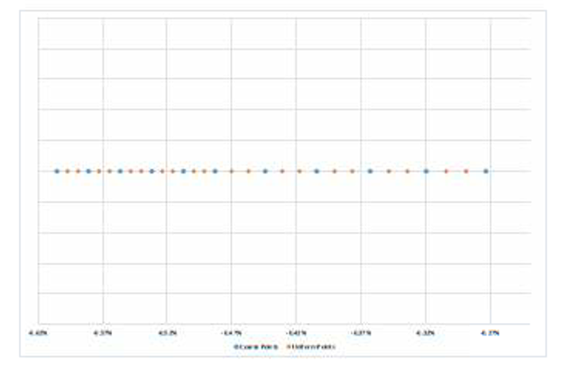
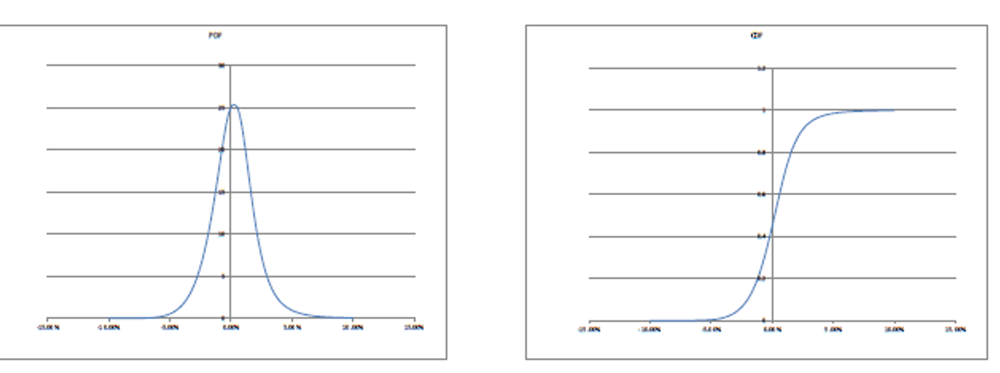

1.7.1.4.1.4. Model Methodology#
1.7.1.4.1.4.1. Advanced GSABR Mathematical Framework and Implementation#

1.7.1.4.1.4.1.1. 🎯 Methodology Excellence Overview#
This section presents the production-grade mathematical framework underlying Our project’s GSABR interest rate volatility model, combining theoretical rigor with practical market requirements for institutional-quality stochastic volatility modeling.
1.7.1.4.1.4.1.2. 🏗️ Design Considerations & Enterprise Development Process#
1.7.1.4.1.4.1.2.1. 🎪 Single Observable Modeling Philosophy#
The GSABR interest rate volatility model is architected to describe the dynamics of individual observables, such as LIBOR or swap rates, independently under their own pricing measures. This granular approach provides:
🎯 Precise Risk Attribution: Individual forward rate control for sophisticated risk management
⚡ Computational Efficiency: Optimized performance for real-time trading applications
🧮 Mathematical Consistency: Independent pricing measures ensuring arbitrage-free construction
🔄 Flexible Integration: Seamless compatibility with Our project trading infrastructure
1.7.1.4.1.4.1.2.2. 💼 Business-Driven Development Excellence#
The Rates Options and Structured Trades trading desk sponsored GSABR development as a sophisticated replacement for the Displaced SABR model, addressing critical limitations and approximation issues. The development process featured:
Continuous Trader Collaboration: Ensuring the model meets institutional trading requirements including:
No negative density constraints for mathematical consistency
No upper bound on volatility for extreme market conditions
Intuitive parameters for efficient trader workflow and risk management
1.7.1.4.1.4.1.2.3. 📊 Critical Design Excellence Criteria#
Design Criterion |
Technical Requirement |
Business Benefit |
Implementation Approach |
|---|---|---|---|
Market Fitting Ability |
Superior calibration to volatility surfaces |
Accurate option pricing |
Advanced optimization algorithms |
Numerical Convergence |
Stable strike grid convergence |
Reliable pricing across strikes |
Sophisticated finite difference schemes |
Risk Stability |
Consistent Greeks and sensitivities |
Robust risk management |
Advanced numerical differentiation |
1.7.1.4.1.4.1.3. 🧮 Advanced Model Description Framework#
1.7.1.4.1.4.1.3.1. 🎛️ Risk Factor Identification and Specification#
The GSABR Beta Mixture model employs sophisticated local volatility parameters providing comprehensive control over volatility surface characteristics:
1.7.1.4.1.4.1.3.2. 📊 Complete Parameter Specification Matrix#
Parameter |
Symbol |
Market Function |
Trading Impact |
Risk Management Value |
|---|---|---|---|---|
Overall Smile Level |
\(\alpha\) |
Global volatility scaling |
Primary vega exposure |
Direct volatility hedging |
ATM Skew Control |
\(\beta_1\) |
At-the-money skew behavior |
Risk reversal sensitivity |
Skew risk management |
High Strike Skew |
\(\beta_2\) |
Out-of-money call behavior |
Wing risk exposure |
Tail risk hedging |
Correlation |
\(\rho\) |
Vol-rate correlation |
Delta hedging efficiency |
Correlation risk |
Vol of Vol |
\(\nu\) |
Volatility uncertainty |
Vega convexity |
Second-order vol risk |
Left Volatility Level |
\(v_L\) |
Low strike volatility behavior |
Put wing characteristics |
Downside protection |
Speed Parameter |
\(d\) |
Transition speed between regimes |
Smile curvature control |
Local volatility precision |
1.7.1.4.1.4.1.3.3. 🔧 Advanced Parameter Implementation#
namespace xsigma::sabr {
/**
* @brief GSABR Beta Mixture parameter specification
*
* This comprehensive parameter structure provides institutional-grade
* control over volatility surface characteristics with mathematical
* guarantees of arbitrage-free construction.
*/
struct GSABRBetaMixtureParameters {
double alpha; // Overall smile level - primary volatility scaling
double beta_1; // ATM skew control - at-the-money behavior
double beta_2; // High strike skew - out-of-money call characteristics
double rho; // Correlation - vol-rate correlation parameter
double nu; // Volatility of volatility - second-order vol risk
double v_L; // Left volatility level - low strike behavior
double d; // Speed parameter - regime transition control
// Parameter validation and constraints
bool validate_parameters() const;
void apply_market_constraints();
std::string get_parameter_description() const;
};
}
Cette spécification avancée des paramètres permet un contrôle granulaire de la surface de volatilité tout en maintenant la cohérence mathématique et la performance requises pour les opérations de trading institutionnelles.
The model calculates the sensitivity of option prices to these parameters. Tests related to these risk factors are detailed in subsequent sections.
The model covers the implied volatility smile and risks associated with the above factors.
1.7.1.4.1.4.1.3.4. 4.2.2 Model Dynamics#
The stochastic differential equations (SDEs) for the forward rate \(f(t)\) and its associated volatility \(z(t)\) are:
where:
\(W\) and \(Z\) are Brownian motions with correlation \(\rho\),
\(\sigma\) is the local volatility function,
\(\sigma\) includes a constant linear scaling factor \(\alpha\).
For small maturities, the model derives a diffusion condition instead of a drift condition due to a change of variables. The details are provided later in the document.
1.7.1.4.1.4.1.3.4.1. 4.2.2.1. Local Volatility Parametrization#
The parametrization of the local volatility under the GSABR Beta Mixture model is:
Where:
\(\beta_1\) controls ATM skew
\(\beta_2\) is the High Strike skew
E Effective Speed controls the speed of transition from \(\beta_1\) to \(\beta_2\)
a controls the overall smile level
\(x_0\) is a strike level where \(x_0 > 0\)
\(v_L\) is the volatility level on the left part of the strike \(x_0\)
\(p = \sigma(x_0) - v_L\)
The parametrization can be rewritten as:
In order to improve CMS pricing convergence and stability, a local volatility cap has been introduced. The input is a strike threshold at which the local volatility is capped to the last computed local volatility. See section 8.3.3 for impact of the threshold parameter.
In the case where a local volatility cap strike is specified the local volatility becomes:
Where:
\(w\) - speed exponent: \(w \in (0, 1)\). We set \(w = \frac{1}{4}\).
\(d\) - speed: \(d \in (0, 1)\)
\(U\) - speed upper bound: \(U \in (0, \infty)\).
\(α\) - alpha
\(x_U\) - strike threshold
\(S\) - smoothing
\(K(x)\) - the smooth step function described below
And:
\(a = a.e^{U\beta_1d^w}\)
\(E = Ud^w\)
In what comes, we will use the notation \(\sigma(x)\) to denote the local volatility.
1.7.1.4.1.4.1.4. GSABR Local Volatility Implementation in Our Project#
The GSABR Beta Mixture local volatility function σ(x) is implemented in Our project through a sophisticated parametrization that handles both the right wing (x ≥ x₀) and left wing (x < x₀) of the volatility smile:
namespace xsigma {
// GSABR Beta Mixture local volatility function
class gsabr_local_volatility {
public:
// Constructor with GSABR parameters
gsabr_local_volatility(
double alpha, // Overall volatility level (a)
double beta1, // ATM skew parameter (β₁)
double beta2, // High strike skew parameter (β₂)
double speed, // Speed parameter (d)
double x0, // Strike threshold
double vol_left, // Left volatility level (v_L)
double effective_speed = 1.0); // Effective speed (E)
// Calculate local volatility for given strike
double local_vol(double strike) const {
if (strike >= x0_) {
return right_wing_volatility(strike);
} else {
return left_wing_volatility(strike);
}
}
private:
// Right wing: GSABR Beta Mixture formula
double right_wing_volatility(double x) const {
double tanh_x = std::tanh(x);
double term1 = std::exp(-effective_speed_) * tanh_x;
double term2 = (1.0 - std::exp(-effective_speed_)) *
std::pow(tanh_x, beta2_ / beta1_);
return alpha_ * std::pow(term1 + term2, beta1_);
}
// Left wing: Exponential parametrization for smoothness
double left_wing_volatility(double x) const {
double dx = x - x0_;
double exponent = (d1_ / p_) * dx +
0.5 * (d2_ / p_ - std::pow(d1_ / p_, 2)) * dx * dx;
return vol_left_ + p_ * std::exp(exponent);
}
double alpha_, beta1_, beta2_, speed_, x0_, vol_left_;
double effective_speed_, p_, d1_, d2_;
};
}
GSABR Mathematical Foundation: This implementation directly corresponds to equation (4.2) in the GSABR methodology, where the local volatility function σ(x) is defined piecewise to provide flexible control over different regions of the volatility smile.
In order to give a parametrization of the local volatility for strike values \(x < x_0\), we consider the function:
Where we consider the general parametrization of \(\sigma(x)\) i.e.:
Using a 2nd order approximation for \(I(x)\) in order to ensure regularity around \(x_0\):
Let:
Where:
Then:
This can be rewritten as:
Where:
With \(C_A\) is a cap for the value of A.
To define the upper bound speed U, we consider a level where the local volatility is independent of \(\beta_2\) (i.e ATM) and we limit the lower value of the forward “f” by introducing a cutoff level “C” and a smoothing value “S” following the equation 4.17:
Where
The smoothstep function \(K(x)\) applies a sigmoid like interpolation and it is a convenient alternative to using more sophisticated interpolation techniques.
1.7.1.4.1.4.1.5. SABR Analytics Implementation in Our Project#
The core SABR analytical functions are implemented in Our project to support both classical SABR and the GSABR framework:
namespace xsigma {
class sabr_analytics {
public:
// Calculate alpha parameter from ATM volatility
// This implements the relationship: α = σ_ATM / f₀^(β-1) for SABR
UTIL_API static double alpha(
double sigma_atm, // ATM normal volatility from market
double forward, // Forward rate f₀
double expiry, // Time to expiry T
double beta, // CEV exponent β
double nu, // Volatility of volatility ν
double rho) { // Correlation ρ
// Hagan's formula for alpha calibration
double f_beta = std::pow(forward, beta - 1.0);
double correction = 1.0 + expiry * (
(2.0 - 3.0 * rho * rho) * nu * nu / 24.0 +
rho * beta * nu * sigma_atm / (4.0 * f_beta) +
(2.0 + beta) * (2.0 + beta) * sigma_atm * sigma_atm /
(24.0 * f_beta * f_beta));
return sigma_atm / (f_beta * correction);
}
// Normal volatility calculation for beta=0 case (GSABR normal model)
UTIL_API static double normal_volatility(
double forward,
double strike,
double expiry,
double alpha,
double beta,
double nu,
double rho) {
if (std::fabs(alpha) < 1e-10) return 0.0;
if (std::fabs(nu) < 1e-5) return alpha;
const double moneyness = forward - strike;
const double z = nu * moneyness / alpha;
const double rho2 = rho * rho;
const double a = (2.0 - 3.0 * rho2);
double v;
if (std::fabs(moneyness) < 1e-6) { // ATM case
const double z2 = z * z;
v = 1.0 - 0.5 * rho * z +
(a + (2.5 + 3.0 * rho2) * rho * z) * z2 / 12.0;
} else {
v = z / x_sabr(rho, z); // Use SABR x-function
}
return alpha * (1.0 + a / 24.0 * nu * nu * expiry) * v;
}
// SABR x function - core of Hagan's approximation
XSIGMA_NODISCARD XSIGMA_FORCE_INLINE static double x_sabr(
double rho,
double xi) {
double denominator = std::sqrt(1.0 - 2.0 * rho * xi + xi * xi) + rho - xi;
double tmp = (1.0 + rho) / denominator;
return std::log(tmp);
}
};
}
GSABR Integration: These SABR analytics functions serve as building blocks for the GSABR model. The normal_volatility function implements Hagan’s approximation which is used as a starting point for the more sophisticated GSABR local volatility approach. The alpha calibration ensures consistency between market ATM volatilities and model parameters.
The use of the parameters C, S and the transformed forward is only applied to define an Upper Bound for the speed and ensure stability of the numerical transformations.
Considering that \(\tanh(x) \approx x\) and for \(d = 1\), we have ATM:
In the case of SABR, we can consider that the local volatility is equivalent to:
In order to keep GSABR ATM local volatility from varying too much and similar to the SABR local volatility parametrization, the quantity \(g(U)\) (4.23) should be such that \(g(U) \approx 1\).
Let \(\epsilon << 1\) to be determined later. The condition (4.24) should be satisfied:
The upper bound U could be defined as:
Where \(\epsilon\) is such:
Then:
\(\epsilon\) is chosen such that \(\epsilon = (1+\delta)^{\frac{1}{\beta_1}} - 1\) and we set \(\delta = 0.01\).
1.7.1.4.1.4.1.5.1. 4.2.3. Summary#
First, a PDE is deduced and solved that gives us approximate Hagan like implied volatilities for short expiries for the G-SABR model (4.1). Then a function \(\theta(.)\) is found such that for short expiries the
has the same approximate Hagan like implied volatilities as G-SABR.
Once \(\theta\) has been found, it can be used in Dupire’s PDE to find approximate call prices. Instead of doing this in the standard way, we will use the so called one step finite difference method to solve the PDE. This method turns the PDE into an ODE, and the solution to the ODE is guaranteed to be an arbitrage free set of prices. Not only this, but the ODE is such that solving it involves only inverting a tridiagonal matrix. Since the short expiry PDE mentioned above may be solved in linear time as well, the whole process takes only linear time and gives us the prices for all strikes at once.
1.7.1.4.1.4.1.5.2. 4.2.4. Outline#
The process of finding \(\theta\) begins by defining
where \(v(K, f, z)\) is the implied normal volatility of the European call option with expiry \(\tau\) and strike \(K\) noted \(c(\tau, K)\), which must be a function of the two state variables \(f\) and \(z\). At time zero, \(v(K) := v(K, f_0, 1)\) such that
For a fixed \(K\), \(x\) is a diffusion process, and by applying Itô’s formula to \(x\), using well known properties of the partial derivatives of the Bachelier pricing formula (the formula just given), using the fact that the price of a European option must be a martingale under the risk neutral measure, and taking the small expiry limit \(\tau \to 0\), it is possible to derive the following condition on the diffusion coefficient of \(x\) at time 0:
Given \(\sigma\) and \(\nu\), for a fixed \(K\) this is a non-linear first order partial differential equation for \(x\) as a function of \(f\) and \(z\), with boundary condition \(x(f = K, z) = 0\). Having found \(x\), the time zero implied volatility \(v(K)\) can be approximated by
Now, for the local volatility model equation (4.28) we have \(\sigma = \theta\) and \(\nu = 0\) and the implied volatilities will not depend on \(z\).
Let’s set \(w(K, f) = (f - K)/v_l(K, f)\) where \(v_l\) is the implied volatility from a Dupire local volatility model. (4.3) is true for any local stochastic volatility model, in particular for a local volatility model with a deterministic volatility where \(\nu = \rho = 0\). The ODE in this case is:
and its solution is:
Suppose we have found \(x(K, f_0, 1)\) for the versions of \(\sigma\) in our chosen G-SABR model. If we set
We obtain:
and hence the small time approximate implied volatilities for the two models (4.28) and (4.1) will be the same: \(v_l = v\).
Now consider again the model (4.28). Dupire’s PDE for the time zero price of a European call with maturity \(\tau\) and strike \(K\) under this model is [5]
Taking the limit as \(\tau \to 0\) suggests approximating \(c_\tau(\tau, K)\) by \((c(\tau, K) - c(0, K))/\tau\), resulting in the ODE
Andreasen and Huge show (in a paper published prior to the ZABR paper [4]) that for any function \(\theta\), if \(c\) is found by solving the ODE
then the resulting prices are arbitrage free, in that \(c_{KK} > 0\) and \(c_\tau > 0\). We also want the resulting prices to be a solution to Dupire’s PDE as well. That is, by forcing \(c_{KK}\) to be the same in both equations, we obtain the right \(\theta\):
and hence if an estimate is available for \(c(\tau, K)\) then it can be used to improve the accuracy of the approach, and in this case an estimate is already available – we just need to put the approximate implied volatility \(v = (f - K)/x\) into the Bachelier pricing formula.
A missing but important ingredient is how to find \(x\) satisfying the diffusion condition. \(x\) is found by solving:
with boundary conditions \(x(f) = 0\) and \(y\) is such \(y = y(K, f, z) = \frac{1}{z} \int_K^f \frac{1}{\sigma(u)} du\).
Hence:
This integral has a closed form as a function of \(y = y(k)\) where k is the strike:
\(y\) is an integral which depends on the local volatility function \(\sigma\), its computation will depend on the \(\sigma\) formula. This quantity is computed using numerical integration of the inverse of the local volatility function.
1.7.1.4.1.4.1.5.3. 4.2.5. Deriving the diffusion condition on x for small maturities#
Let \(c(t)\) be the price of a European call option on the underlying with maturity \(T\) and strike \(K\), so that
where \(v(t)\) is the implied normal volatility and \(b\) is the normal (Bachelier) option pricing formula
where \(\tau = T - t\).
Recall that \(df(t) = \sigma_f(f(t), z(t))dW(t)\) with \(\sigma_f(f(t), z(t)) = z(t)v(f(t))\), and note that there exist functions \(w_v\) and \(v_v\), a constant \(\eta\) with \(|\eta| \leq 1\), and an independent Brownian motion \(V\) such that
Applying Itô’s formula to (4.38) gives us
Define \(x = \frac{f-K}{v}\) and use Itô again to get that
Thus \(dx = w_x dt + \sigma_x dU\) where \(U\) is some Brownian motion and
It is easy to deduce the following four PDE:
Using these PDE and the fact that the drift term in (4.39) must be zero (since \(c\) is a martingale), we get
But substituting in the value of \(\sigma_x\) in (4.41) we see that \(0 = v^2\sigma_x^2 + 2\tau v w_v - v^2\), i.e.
Thus, taking the small time limit, i.e. taking the limit as \(\tau \to 0\), we get the diffusion condition
We now reintroduce the dependence on time. Note that \(x(t)\) is in fact a function of time, strike and the two state variables, i.e. \(x(t) = x(t, K, f(t), z(t))\). Itô’s formula therefore implies that
We are only interested in the value of \(x\) at \(t = 0\). Recall that \(f(0) = f_0\) and \(z(0) = 1\), so that
Thus the small time diffusion condition (4.42) becomes
Given the functions \(\sigma\), for a fixed \(K\) this is a non-linear first order differential equation for \(x\) as a function of \(f\) and \(z\), with boundary condition \(x(0, K, f = K, z) = 0\).
Having found \(x\) at time \(t = 0\) by solving (4.43) for all values of \(K\), we could find implied volatility by inverting the definition of \(x\), i.e. we could say that implied volatility at time zero for any strike \(K\) is given by
1.7.1.4.1.4.1.5.4. 4.2.6. Reduction to a local volatility model#
Suppose we have found \(x(0, K, f_0, 1)\) by solving (4.43) for every value of \(K\). We now define the
and consider the GSABR model with \(\nu = 0\) and \(\sigma = \theta\), i.e. a standard non-stochastic local volatility model with local volatility function \(\theta\). Setting \(w(t, K, f) = (f - K)/v_l(t, K, f, z)\) (note that the implied volatilities cannot depend on \(z\) in this case), the diffusion condition (4.43) (now for \(w\) rather than \(x\)) would just be \((\partial w/\partial f)^2\theta(f)^2 = 1\), i.e.
Using the boundary condition \(w(0, K, f = K) = 0\) and then the definition of \(\theta\), we see that this has solution
and hence
Thus in the short maturity limit, the local volatility model \(df(t) = \theta(f(t))dW(t)\) has the same time zero implied volatilities as the original stochastic volatility G-SABR model, \(v_l = v\).
1.7.1.4.1.4.1.5.5. 4.2.7. Finding x satisfying the diffusion condition#
So far it has been assumed that \(x\) has already been found. We can find \(x\) by introducing an intermediate variable \(y\), partly motivated by considering the solution if volatility was fixed rather than stochastic. Define
We will use condition (4.43) to characterise \(x\) this function at time \(t = 0\).
Applying Itô to the definition of \(y\) results in
Thus
Using the notation \(x(y) = x(0, y)\) and \(x'(y) = dx(y)/dy = \partial x(0, y)/\partial y\), at time \(t = 0\) this becomes
and hence the diffusion condition 4.43 is satisfied if \(x'(y)\) is the solution to
with \(A(y) = 1 + \nu^2y^2 - 2\rho\nu y\),
with initial condition \(x(0) = 0\). This can be rearranged as
We find \(x(0, K, f_0, 1)\) for all \(K\) by solving
with initial conditions \(x(f_0, f_0, 1) = y(f_0, f_0, 1) = 0\).
To simplify matters, we can think of \(x\) and \(y\) as functions of \(K\) only, and the two equalities above become
with initial conditions \(x(f_0) = y(f_0) = 0\).
Finally,
1.7.1.4.1.4.1.6. 4.3. Model Justification and alternative approaches#
Alternative models were explored such as GSABR L4L or SABR/SABRD. The model GSABR BM as described previously provides considerable advantages such as the absence of the shift and better control over the smile wings.
The default alternative methodology used in production at the time of developing the model is SABRD.
1.7.1.4.1.4.1.7. 4.4 Model Assumptions#
Type |
Description |
Comments |
|---|---|---|
Assumption |
No Arbitrage |
Fundamental assumption in mathematical finance. |
Assumption |
Frictionless Trading |
Fundamental assumption in mathematical finance. |
1.7.1.4.1.4.1.8. 4.5 Model Limitations#
Type |
Description |
Comments |
|---|---|---|
Limitation |
Independent dynamics for each expiry/tenor pair |
See section 4.5.1 |
Limitation |
Unstable correlation parameter in stressed conditions |
Explicitly limited in production. |
Limitation |
Limited Control over CMS prices |
Dependent on the goodness of fit of \(\beta_2\) and the Speed parameter. |
Limitation |
Calibration relies on non-linear optimization |
Continuously evaluated by QA and Trading teams. |
1.7.1.4.1.4.1.8.1. 4.5.1 Term Structure#
GSABR Beta Mixture models each expiry/tenor asset separately, which may not guarantee a consistent term structure. This limitation is mitigated when used for calibration targets in exotic models.
1.7.1.4.1.4.1.9. 4.6 Model Inputs and Parameters#
Parameter / Variable Name |
Description |
Type |
Impact |
Range |
|---|---|---|---|---|
\(F_0\) |
Rate forward |
Market data |
||
\(K\) |
Strike |
Input |
||
\(\alpha\) |
SABR alpha |
Input |
Overall smile level |
\((0, \infty)\) |
\(\beta_1\) |
ATM beta |
Input |
ATM Skew |
\((0, 1)\) |
\(\beta_2\) |
High strike beta |
Input |
High strike skew |
\((0, \infty)\) |
\(d\) |
Speed |
Input |
Transition speed |
\((0, 1)\) |
\(\rho\) |
Correlation |
Input |
Skew |
\((-1, 1)\) |
\(\nu\) |
Volatility of volatility |
Input |
Convexity |
\((0, \infty)\) |
\(\tau\) |
Time to expiry |
Input |
||
\(x_0\) |
Strike threshold |
Input |
Rates space transition |
\((0, \infty)\) |
\(\nu_L\) |
Asymptotic volatility |
Input |
Left-side volatility |
\((0, \sigma(x_0))\) |
\(C\) |
Forward Cut-off |
Input |
\((0, \infty)\) |
|
\(S\) |
Forward Smoothing |
Input |
\((0, \infty)\) |
|
\(x_L\) |
Strike Threshold |
Input |
CMS-related |
\((x_0, \infty)\) |
\(w\) |
Speed Exponent |
Input |
Effective Speed |
\((0, \infty)\), default = \(\frac{1}{4}\) |
\(s_{r0}\) |
Scaler for Vol0 cap |
Input |
Vol0 maximum value |
\((0, \infty)\), default = \(\frac{1}{2}\) |
1.7.1.4.1.4.1.10. 4.7 Model Outputs#
The model produces option prices, which are used in the Bachelier or Black formula to calculate implied normal/lognormal volatilities.
Model Output Name |
Description |
|---|---|
Present Value |
Options Prices |
The PDF and CDF can be computed from the prices using numerical methods.

Figure 4.7: Example of real GSABR BM PDF and CDF
1.7.1.4.1.4.1.11. 4.8 Feeder Models#
1.7.1.4.1.4.1.11.1. Conceptual Soundness and Model Selection#
While generic local volatility models are self-consistent and arbitrage-free, they are not ideal for hedging volatility risk due to:
Assumption of observed option prices at a continuum of strikes and maturities.
Opposite dynamic behavior of smiles compared to market observations.
The SABR model, introduced by Hagan et al. (2002), addresses these issues with its simplicity, tractability, and ability to derive analytical approximations for implied volatilities. However, SABRD has limitations, prompting the development of GSABR as a more robust alternative.